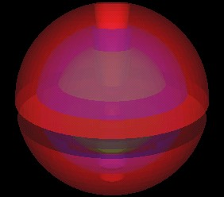

I am trying to program 3 torus-like objects, one within the other, in Java 3D, with a transparency setting such that you can see all 3 objects.
Here is an image of what I mean.
|
|
 |
| Using 3,168 QuadArrays. | |

|
|
| Using 3,168 QuadArrays. | |
This was created using 3 Shape3D's and thousands of quadArrays. Each quadArray contains 1 quad polygon (4 points) only.
I have the following coded for the View:
SU.getViewer().getView().setDepthBufferFreezeTransparent(false); SU.getViewer().getView().setTransparencySortingPolicy(View.TRANSPARENCY_SORT_GEOMETRY);
And the transparency attributes are set to:
// Setup polygon attributes
PolygonAttributes PA = new PolygonAttributes(PolygonAttributes.POLYGON_FILL,
PolygonAttributes.CULL_NONE, 0.01f, true);
A.setPolygonAttributes(PA);
// Setup Treansparency
TransparencyAttributes TA = new TransparencyAttributes(TransparencyAttributes.NICEST, 0.5f);
Now for the problems:
If I tilt this image a little, I can see a clear patch of green, the color of the inner most object.
| Clear green patch appears. |
I don't think this should occur.
I have removed the outer most object and left the two inner objects just as they are. I get the following images.
| Just inner 2 objects. | |
As you can see, there is no clear green patch. There is some green, but not as clear as when I had 3 objects. I would think that adding the 3rd outer red object would reduce the green even further, not enhance it. So, I think there is a problem here.
Although splitting the objects up into 3,168 quadarrays makes the object look pretty good, memory consumption is a big problem.
With no objects in the scene graph, I looked at have much memory is allocated to javaw. It was approx. 17,500k.
With the 3 objects as 3,138 quadarrays it was approx.: 28,800k. Is Java 3D really using over 11 meg for this one object?
That's O.K. if it is to be the only thing I plan to have in my scene graph, but I am planning to have 25 to 30 of these objects!
So, I can not code this object in this way.
I then coded this object as 3 different quadArrays, one for the outer most object, one for the middle object and one for the inner most object. The thought was to then use an OrderedGroup to control the order of rendering so the transparency would work correctly. None of these 3 objects intersect each other.
But I get horrible results!! Take a look.
| Almost O.K., but left/right not the same. |
| Rotated a little looks a lot worst. |

|
| Where are these light/dark red effects coming from? |
So, I tried BLENDED for TransparencyAttributes. Still no good.
| TransparencyAttributes.BLENDED |
Note that the only light I have in the scene graph is
BranchGroup ALBG = new BranchGroup(); ALBG.setCapability(BranchGroup.ALLOW_CHILDREN_READ); AmbientLight lightA = new AmbientLight(); lightA.setInfluencingBounds(worldBounds); ALBG.addChild(lightA); objRoot.addChild(ALBG);
Although the memory usage is now a little better (26,500k) its still not going to let me have 25 or 30 of these things in my scene graph and still have any kind of interactive response.
I thought I might try specifying CULL_BACK in the appearance, but that just made things much worst.
| CULL_BACK used here. |
This made me think the lower half had its quadArray surface normals pointing in the wrong direction. So, for the lower half of the objects only, I reversed the normal vector directions.
|
CULL_BACK used here. Bottom normals reversed. |
So, no good.
If anyone has alternative suggestions, please let me know.